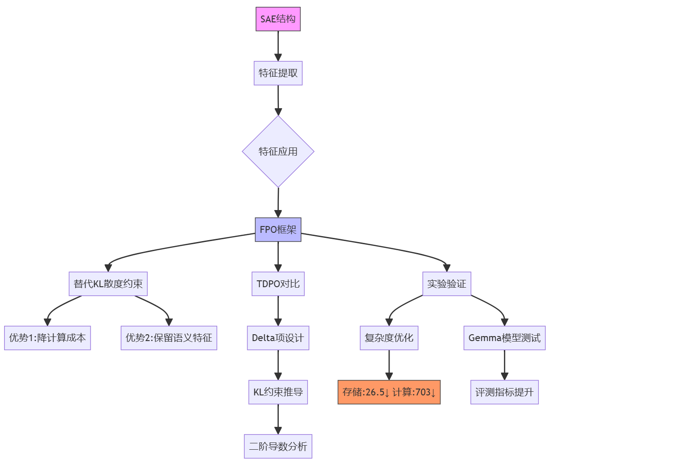

SAE in FPO¶

Sparse Auto Encoder¶
1. Auto-Encoder¶
无监督学习 自编码器
1.1 网络组件定义¶
| 组件 | 数学表达 | 功能描述 |
|---|---|---|
| 编码器 | \(h = f_\theta(x) = \sigma(Wx + b)\) | 将输入\(x \in \mathbb{R}^{d_x}\)映射到潜在空间\(h \in \mathbb{R}^{d_h}\) |
| 瓶颈层 | \(\text{dim}(h) = d_h \ll d_x\) | 压缩关键特征，控制信息容量 |
| 解码器 | \(\hat{x} = g_\phi(h) = \sigma'(W'h + b')\) | 从潜在表示重建输入\(\hat{x} \in \mathbb{R}^{d_x}\) |
| 重建误差 | \(L(x,\hat{x}) = \|x - \hat{x}\|^2\) | 衡量输入与重建输出的差异 |
1.2 通用优化目标¶
- \(\theta = \{W, b\}\)：编码器参数
- \(\phi = \{W', b'\}\)：解码器参数
- \(R(\cdot)\)：正则化项
2. 变体架构对比¶
| 类型 | 结构特点 | 正则化项\(R(\theta,\phi)\) | 应用场景 |
|---|---|---|---|
| Sparse AE | 隐藏层激活稀疏约束 | \(R = \|W\|_F^2 + \|W'\|_F^2 + \beta \Omega(h)\) | 分类任务特征学习 |
我们正在研究神经网络中的神经元。每个神经元都在短文档中寻找某些特定的东西。请查看神经元激活的文档部分，并用一句话概括该神经元正在寻找什么。不要列出单词的例子。
激活格式是 token<tab>activation。激活值范围从 0 到 10。神经元找到它正在寻找的东西用非零激活值表示。激活值越高，匹配越强。
---
**示例 1**
---
Neuron 1
Activations:
<start>
the 0
sense 0
of 0
together 3
ness 7
in 0
our 0
town 1
is 0
strong 0
. 0
<end>
Activations (过滤掉零值):
<start>
together 3
ness 7
town 1
<end>
Explanation of neuron 1 behavior: the main thing this neuron does is find phrases related to community
---
**示例 2**
---
Neuron 4
Activations:
<start>
Esc 0
aping 9
the 4
studio 0
, 0
Pic 0
col 0
i 0
is 0
warmly 0
affecting 3
<end>
Activations (过滤掉零值):
<start>
aping 9
the 4
affecting 3
<end>
Explanation of neuron 4 behavior: the main thing this neuron does is find ... [此处省略，因为论文中没有给出完整的解释]
---
**... (重复多个示例)**
---
**目标神经元**
---
Neuron [目标神经元编号]
Activations:
<start>
[token1]<tab>[activation1]
[token2]<tab>[activation2]
...
<end>
Activations (如果稀疏，重复非零激活的token-activation对):
<start>
[token_非零1]<tab>[activation_非零1]
[token_非零2]<tab>[activation_非零2]
...
<end>
我们正在研究神经网络中的神经元。每个神经元都在短文档中寻找某些特定的东西。请查看神经元的功能解释，并尝试预测其在特定token上的激活值。
激活格式是 token<tab>activation，激活值范围从 0 到 10。大多数激活将为 0。
---
**示例 1**
---
Neuron 1
Explanation of neuron 1 behavior: the main thing this neuron does is find phrases related to community
Activations:
<start>
the 0
sense 0
of 0
together 3
ness 7
in 0
our 0
town 1
is 0
strong 0
. 0
<end>
---
**示例 2**
---
Neuron 4
Explanation of neuron 4 behavior: the main thing this neuron does is find present tense verbs ending in 'ing'
Text: Starting from a position of
Last token in the text: of
Last token activation, considering the token in the context in which it appeared in the text:
我们正在研究神经网络中的神经元。每个神经元都在短文档中寻找某些特定的东西。请查看神经元的功能解释，并尝试预测它在每个token上的激活值。
激活格式是 token<tab>activation，激活值范围从 0 到 10，"unknown" 表示未知的激活。大多数激活将为 0。
---
**示例 1**
---
Neuron 1
Explanation of neuron 1 behavior: the main thing this neuron does is find phrases related to community
Activations:
<start>
the unknown
sense unknown
of 0
together 3
ness 7
in 0
our 0
town 1
is 0
strong 0
. 0
<end>
---
**示例 2**
---
Neuron 4
Explanation of neuron 4 behavior: the main thing this neuron does is find present tense verbs ending in 'ing'
Activations:
<start>
Star unknown
ting unknown
from unknown
a unknown
position unknown
of unknown
strength unknown
<end>
---
**目标神经元**
---
Neuron [目标神经元编号]
Explanation of neuron [目标神经元编号] behavior: [目标神经元行为解释]
Activations:
<start>
[token1]<tab>unknown
[token2]<tab>unknown
...
<end>
FPO¶
- DPO的loss
- 抽象成一般Loss设计
- TDPO的loss，其中的delta项的设计理由
- 约束 SAE特征框定KL散度的上限
- FPO使用SAE特征抽取替代KL散度
主轴： - 规避显示计算KL散度，降低计算开销 - SAE具有的特征表示性
TDPO的设计¶
一般性的 Preference Optimization Loss¶
\begin{array}{ccc}
\text{原始优化问题} & \xrightarrow{\text{引入拉格朗日乘子}} & \mathcal{L}(\pi,\lambda) \\
\downarrow & & \downarrow \\
\text{对}\pi\text{求导} & \xrightarrow{\text{得指数形式通解}} & \text{对}\lambda\text{求导} \\
& \downarrow & \\
\text{代入归一化条件} & \xrightarrow{\text{确定配分函数}} & \text{闭式解} \pi^* \\
& \downarrow & \\
\text{验证贝尔曼方程} & \xleftarrow{\text{连接Q函数}} & \text{策略优化完成}
\end{array}
一、优化问题形式化¶
目标函数： $$
\max_{\pi} \underbrace{\mathbb{E}{z \sim \pi}\left[ A}}}(s_t, z) \right]{\text{优势期望}} - \beta \underbrace{D}}\left( \pi | \pi_{\text{ref}} \right)}_{\text{KL惩罚项}
\sum_z \pi(z|s_t) = 1 \quad \text{且} \quad \pi(z|s_t) \geq 0
$$
二、拉格朗日函数构造¶
引入乘子\(\lambda\)处理概率归一化约束： $$ \mathcal{L}(\pi, \lambda) = \sum_z \pi(z|s_t) A(s_t,z) - \beta \sum_z \pi(z|s_t) \log\frac{\pi(z|s_t)}{\pi_{\text{ref}}(z|s_t)} + \lambda \left(1 - \sum_z \pi(z|s_t)\right) $$ 其中 $ A(s_t,z) \equiv A_{\pi_{\text{ref}}}(s_t,z) $
三、极值必要条件¶
1. 对策略变量求导¶
对每个候选动作\(z\)，令偏导为零： $$ \frac{\partial \mathcal{L}}{\partial \pi(z|s_t)} = A(s_t,z) - \beta \left( \log\frac{\pi}{\pi_{\text{ref}}} + 1 \right) - \lambda = 0 $$ 整理得： $$ \log\frac{\pi(z|s_t)}{\pi_{\text{ref}}(z|s_t)} = \frac{A(s_t,z) - \lambda - \beta}{\beta} $$ 指数化： $$ \pi(z|s_t) = \pi_{\text{ref}}(z|s_t) \cdot \exp\left( \frac{A(s_t,z)}{\beta} \right) \cdot \exp\left( -\frac{\lambda + \beta}{\beta} \right) $$
2. 对乘子求导恢复约束¶
四、联立方程求解¶
1. 通解表达式¶
将策略表达式改写为：
2. 归一化条件应用¶
代入\(\sum_z \pi(z|s_t) = 1\)：
解得归一化因子：
3. 最终闭式解¶
其中配分函数：
哪里来的SeqKL:¶
阶段1：Advantage的原始定义
在强化学习中，优势函数原本定义为：
其中：
- \(Q_{\pi}\)：状态-动作值函数
- \(V_{\pi}\)：状态值函数
阶段2：在语言模型中的重构
对于序列生成任务，每个token位置对应一个"状态"，于是有：
阶段3：Q函数的策略比表达
通过步骤2的推导，我们得到：
代入优势函数：
阶段4：KL散度的浮现
注意到：
因此优势函数变为：
阶段5：序列层面的扩展
将单步优势扩展到完整序列（假设\(\gamma=1\)）：
其中：
阶段6：SeqKL的定义
自然地将序列KL散度定义为：
关于KL散度约束的推导¶
一、符号系统明确¶
-
定义变量：
-
参考logits：\(z_{\text{ref}} \in \mathbb{R}^V\)
- 当前logits：\(z = z_{\text{ref}} + \Delta z\)
- 概率分布：\(p_{\text{ref}} = \text{softmax}(z_{\text{ref}})\)
-
当前分布：\(p = \text{softmax}(z)\)
-
KL散度目标：
\(D_{\text{KL}} = \sum_{i=1}^V p_{\text{ref},i} (\log p_{\text{ref},i} - \log p_i)\)
二、一阶导数计算（梯度）¶
步骤1：展开求和项¶
将KL散度展开为：
\(D_{\text{KL}} = \underbrace{\sum p_{\text{ref},i} \log p_{\text{ref},i}}_{\text{常数项}} - \sum p_{\text{ref},i} \log p_i\)
步骤2：求导目标简化¶
只需计算：
\(\frac{\partial D_{\text{KL}}}{\partial \Delta z_k} = -\sum_{i=1}^V p_{\text{ref},i} \frac{\partial \log p_i}{\partial \Delta z_k}\)
步骤3：链式法则应用¶
对每个\(\log p_i\)求导：
\(\frac{\partial \log p_i}{\partial \Delta z_k} = \frac{1}{p_i} \cdot \frac{\partial p_i}{\partial \Delta z_k}\)
步骤4：softmax导数计算¶
回忆softmax导数公式：
\(\frac{\partial p_i}{\partial \Delta z_k} = p_i (\delta_{ik} - p_k)\)
其中，克罗内克δ函数：
步骤5：代入并化简¶
将步骤3和步骤4代入步骤2：
简化分数项：
展开求和：
第一项由于δ函数性质只剩下\(p_{\text{ref},k}\)，第二项中\(p_k\)与\(i\)无关可提出：
因为概率分布求和为1：
三、二阶导数计算（Hessian矩阵）¶
步骤1：从一阶导数出发¶
已有：
现在对\(\Delta z_j\)求导：
步骤2：再次应用softmax导数¶
直接使用softmax导数公式：
在参考点\(\Delta z=0\)处，此时\(p_j = p_{\text{ref},j}\)，因此：
步骤3：矩阵形式展开¶
对于所有元素组合：
这等价于：
实验设计¶
| 模型 | SFT 阶段（微调数据集） | SFT 阶段（微调数据集） | 对齐阶段 | 评测阶段 |
|---|---|---|---|---|
| Gemma-2-2B 和 Gemma-2-9B | 使用 Ultrachat-200K 数据集建立基线对话能力 | 使用 Halos 数据集进行微调 | 使用 UltraFeedback 数据集进行对齐 | 在 MT-Bench、AlpacaEval 2 和 Arena-Hard 上评测 |
超参数设置¶
- 批量大小：32
- 学习率：\(5 \times 10^{-7}\)
- 预热步骤：150
- 训练轮数：1
- 优化器：
- Gemma-2-2B 使用 Adam
- Gemma-2-9B 使用 RMSProp
计算复杂度优化分析¶
通过Gemma-2B的具体案例进行量化对比：
| 计算环节 | 传统方法(TDPO) | FPO(SAE方法) | 优化比 |
|---|---|---|---|
| 单样本存储空间 | \(2 \times T \times V\) | \(2 \times k\) | \(V/k \approx 26.5\)倍 |
| 矩阵运算量 | \(O(V^2T)\) | \(O(k^2T)\) | \((V/k)^2 \approx 703\)倍 |
| 反向传播内存占用 | ~18GB (V=265K) | ~0.68GB (k=10K) | 26.5倍 |
| 特征比对计算量 | \(10^{12}\) FLOPs | \(10^8\) FLOPs | 4个量级 |
实现效率的关键设计¶
- Top-k特征筛选
对稀疏激活\(c^{(t,\ell)}\)进行：
保留约\(1.5k\)个有效特征，避免全特征比对。例如当\(k=10^4\)时，实际计算量仅为\(1.5\times10^4\)次/样本。
- 层级特征池化
通过时序平均池化：
将\(T \times k\)特征压缩为\(k\)维，使复杂度与序列长度\(T\)解耦。